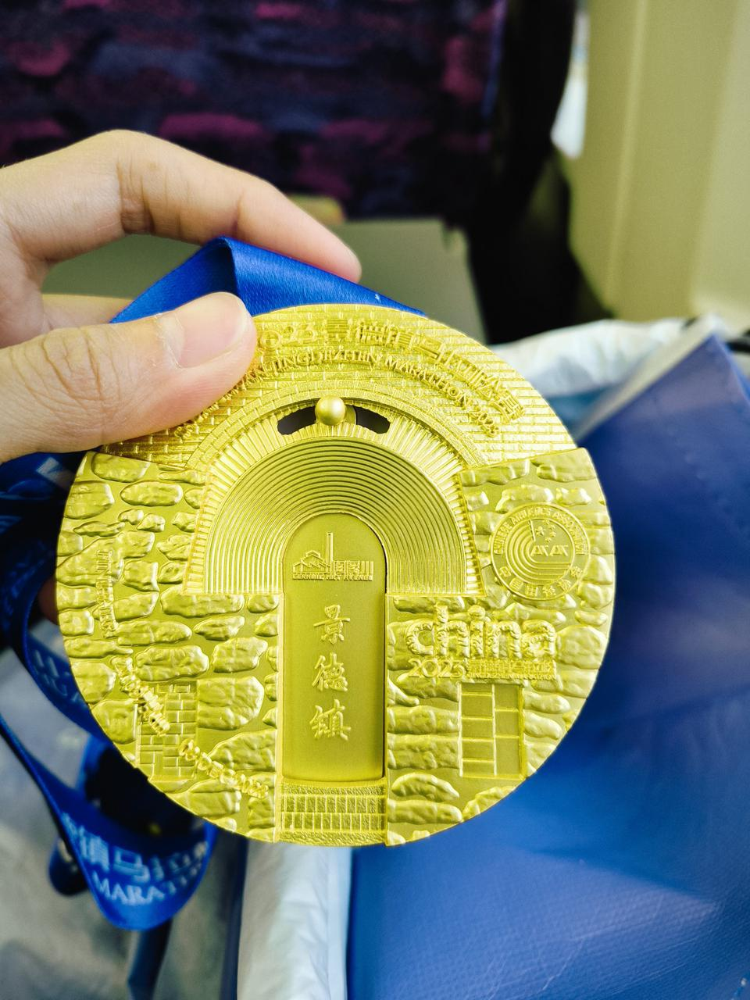
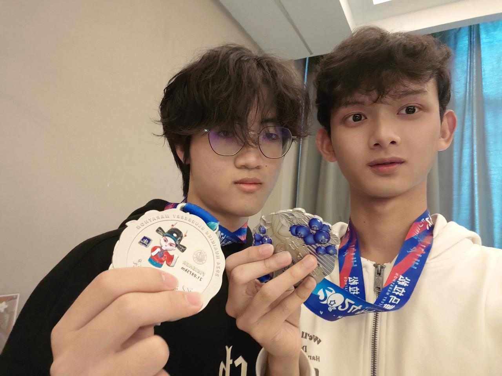
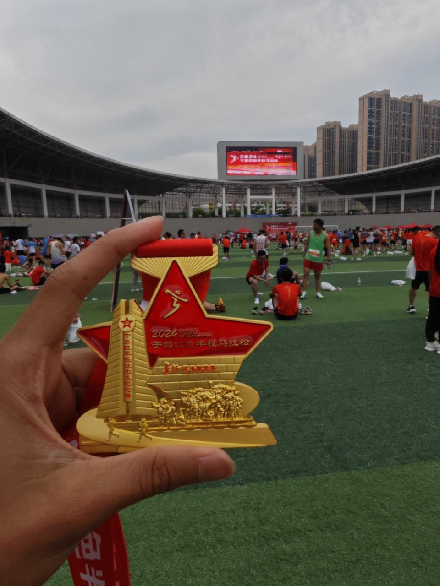
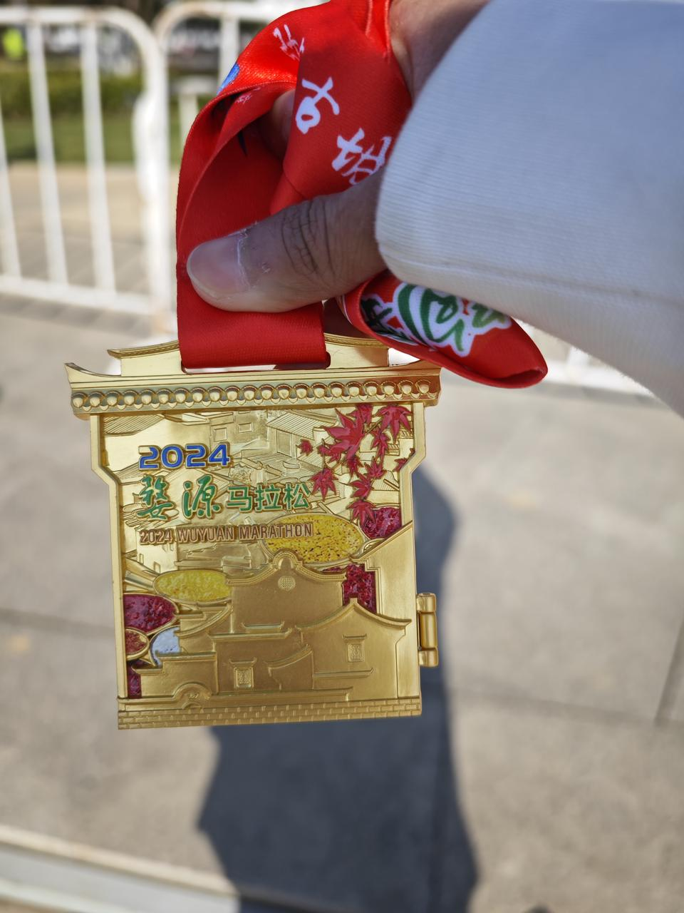

A JOURNEY JUST BEGINNING
向外探索。
向内生长。
你好，我是邓希杰。
在奔跑中向前，在笔墨中沉淀。
用影像记录热爱，用行动走向下一程。
探索一个节点，走近一个真实的我SCROLL WITHIN · EXPLORE BEYOND
A JOURNEY JUST BEGINNING
你好，我是邓希杰。
在奔跑中向前，在笔墨中沉淀。
用影像记录热爱，用行动走向下一程。
01 / ORIGIN
我是邓希杰，来自江西。
2026 年，我从江西科技学院毕业。大学期间，马拉松和书法成为我的两个爱好。赛事照片、收藏的奖牌和日常练字片段，留下了这段时光里具体而真实的足迹。
现在，我希望继续学习，找到一份合适的工作。也期待与身边的人友好相处，一起进步。

02 / MOMENTUM · 跑步相册
跑过的路，也值得被记住。
马拉松是我在大学期间培养的爱好。从赛场里的奖牌留念，到与同行者的合影，这些照片记录了奔跑之外同样珍贵的瞬间。

查看大图 ↗一枚奖牌，留住一段奔跑的记忆。
飞书原图 ↗
查看大图 ↗与同行的人，分享这份热爱。
飞书原图 ↗
查看大图 ↗场地、人群，以及镜头前的纪念。
飞书原图 ↗
查看大图 ↗把这一站，收进自己的跑步相册。
飞书原图 ↗继续向前，也记得收藏沿途的风景。
03 / STILLNESS · 书法日常
奔跑之外，留一点时间给书写。
书法是我的另一个爱好。这两段短片记录了日常练习中的片刻：握笔、落笔，再写下一行。比起一句“喜欢书法”，我更想用真实的练习过程介绍这份热爱。
点击卡片前往飞书观看，可能需要登录飞书。
一动一静，都是我喜欢的生活。
04 / MY VOICE
用 34 秒，认识一个真实的我。
关于我从哪里来、喜欢什么，以及对下一段生活的期待。
我是邓希杰，来自江西，是江西科技学院2026届毕业生。大学期间喜欢跑马拉松和练书法。希望继续学习、顺利就业，也希望与身边的人友好相处、共同进步。
点击播放 · 内含中文字幕